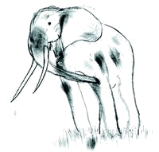

Securing and Optimizing Linux: RedHat Edition -A Hands on Guide
Prev
Next
I. Appendixes

Table of Contents
A.
Resources
B.
Tweaks, Tips and Administration tasks
C.
Obtaining Requests for Comments (RFCs)
Prev
Home
Next
Backing up and restoring over the network
Resources